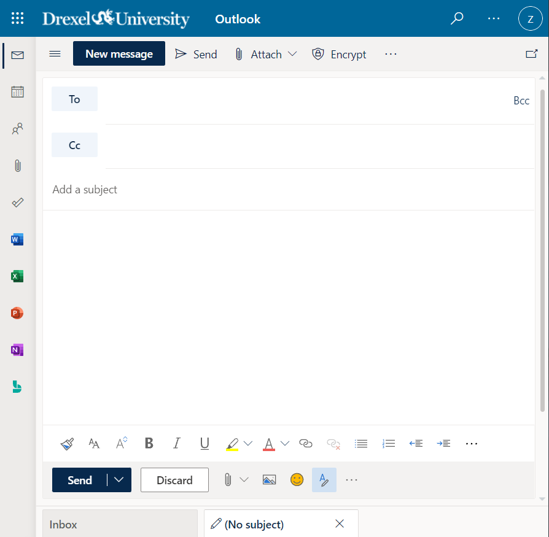
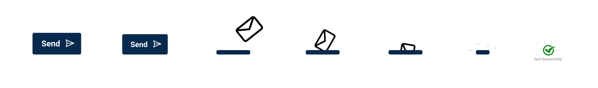

Outlook Send Mail
This page is responsive
Outlook Mailbox

Triggers
- Click on the send button after writing an email
Rules
- The send button will decrease in size to show a pressing state and bounce back
- The send button will turn into a rounded edge horizontal straight line
- An envelope will fade in and enter the rounded edge line.
- The email is sent to the correct person
- The email will be moved from the draft section to the sent item section
- The envelope will dissappear
- The line will shorten with some sparkles
- The line will disappear
- A checkmark will fade in and enlarge to show that the email is successfully sent
Feedbacks
- The send button will decrease in size to show a pressing state and bounce back
- The send button will turn into a rounded edge horizontal straight line
- An envelope will fade in and enter the rounded edge line.
- The envelope will dissappear
- The line will shorten with some sparkles
- The line will disappear
- A checkmark will fade in and enlarge to show that the email is successfully sent
Loops & Modes
